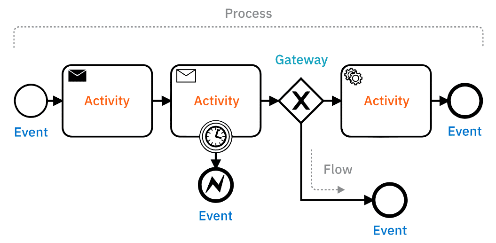
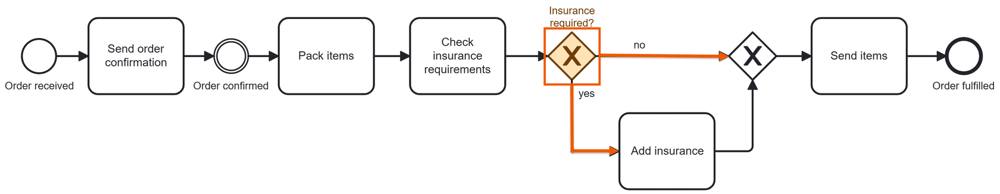
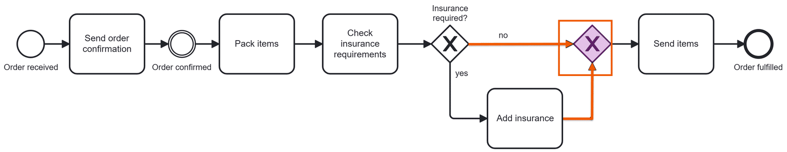
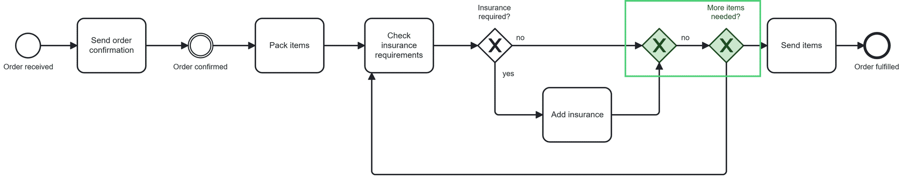
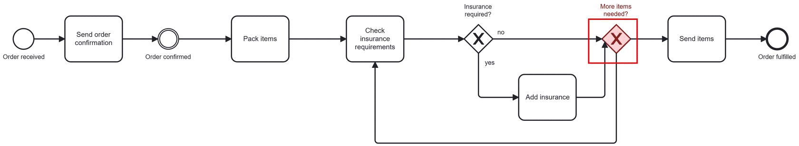
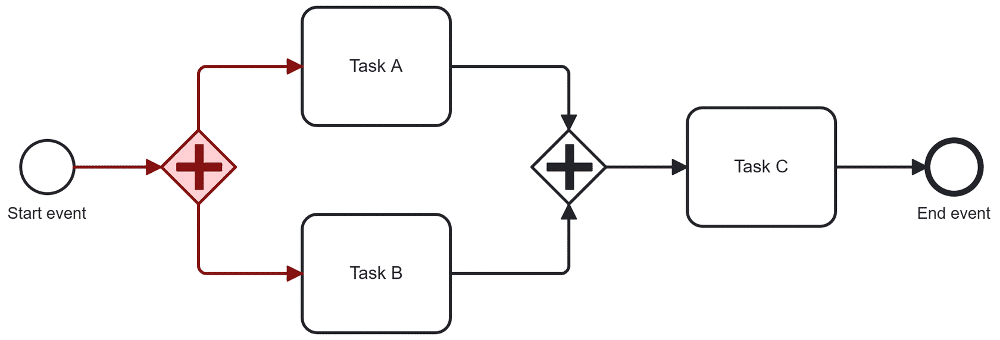
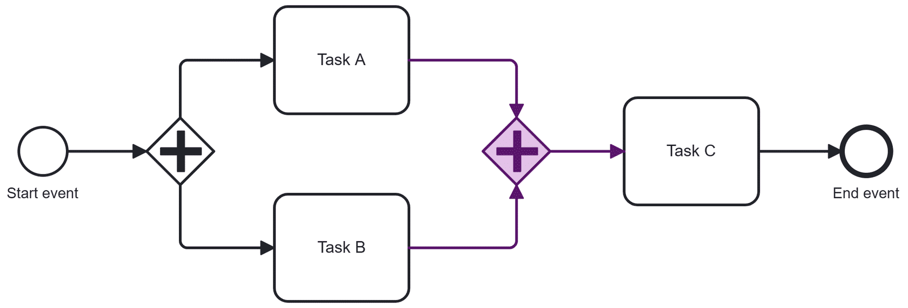

Giới thiệu về BPMN
Business Process Model and Notation — một cách vẽ quy trình nghiệp vụ sao cho ai nhìn vào cũng hiểu, không riêng gì dân kỹ thuật.
Nếu bạn từng thấy một sơ đồ đầy ô vuông, hình thoi, mũi tên mô tả "khi khách đặt hàng thì tiếp theo làm gì" — rất có thể đó là một diagram được vẽ bằng BPMN.
BPMN là gì?
BPMN là một open standard (chuẩn mở, ai cũng dùng được, không thuộc riêng công ty nào) định nghĩa sẵn một bộ ký hiệu để vẽ quy trình nghiệp vụ. Nhờ dùng chung một bộ ký hiệu, dù quy trình đơn giản hay phức tạp, ai đọc diagram cũng hiểu đúng một nghĩa — không cần đoán.
Năm viên gạch cơ bản mà gần như diagram BPMN nào cũng có — bấm vào từng mục để xem ví dụ:
1
Start event
Điểm khởi đầu — thứ gì đó khiến quy trình bắt đầu chạy. Ví dụ: khách vừa đặt hàng.
2
Task
Một bước công việc cụ thể cần làm. Ví dụ: kiểm tra tồn kho.
3
Gateway
Điểm rẽ nhánh — dựa vào điều kiện tại thời điểm đó mà đổi hướng đi tiếp theo của flow. Ví dụ: đơn có cần bảo hiểm hay không sẽ quyết định bước tiếp theo là gì.
4
Sequence flow
Mũi tên nối các bước lại, cho biết bước nào chạy trước, bước nào chạy sau.
5
End event
Điểm kết thúc — một quy trình có thể có nhiều điểm kết thúc khác nhau, tùy kết quả.
Vì sao dùng BPMN?
Vì khi cả team — từ business đến kỹ thuật — cùng nhìn vào một "ngôn ngữ hình ảnh" chung, sẽ dễ nhận ra chỗ nào quy trình đang chậm, đang thừa bước, hay đang thiếu logic. Từ đó dễ tối ưu hơn: ít sai sót, ít chậm trễ, và cuối cùng khách hàng cũng hài lòng hơn.
Tóm lại: BPMN là cầu nối giữa người nghĩ ra quy trình (business) và người hiện thực hóa nó (developer) — cả hai cùng đọc một diagram, cùng hiểu một nghĩa.
BPMN hoạt động thế nào?
Đằng sau mỗi diagram BPMN là một file XML — nhờ vậy process engine (như Camunda) có thể đọc và thực thi trực tiếp diagram đó, thay vì developer phải code lại từ đầu.
Cùng một diagram, nhưng mỗi vai trò trong tổ chức nhìn vào với một mục đích khác nhau:
- Business analyst: vẽ và cải tiến quy trình.
- Developer: hiện thực hóa phần kỹ thuật của quy trình.
- Manager: theo dõi quy trình đang chạy tới đâu, có đúng tiến độ không.
Ai duy trì BPMN?
BPMN được duy trì bởi The Object Management Group (OMG) — một tổ chức chuẩn hóa độc lập, không thuộc về Camunda hay bất kỳ vendor nào. Đây cũng là lý do BPMN được dùng rộng rãi: học một lần, áp dụng được ở bất kỳ công cụ hay công ty nào. BPMN là công cụ cốt lõi trong Business Process Management (BPM) — lĩnh vực chuyên tối ưu cách công việc được vận hành trong một tổ chức.
Các thành phần chính của BPMN
Các nhóm element trong BPMN
Để không bị rối giữa hàng chục ký hiệu, BPMN gom các graphical element lại thành vài nhóm chính:
- Events (sự kiện): đại diện cho điều gì đó xảy ra — trước, trong, hoặc vào cuối process. Có event bạn chủ động kích hoạt, có event bạn chỉ đứng chờ để phản ứng lại.
- Tasks (công việc): các bước cụ thể trong process — những activity thật sự cần được thực hiện.
- Gateways (cổng rẽ nhánh): đại diện cho việc process có nhiều hướng đi khác nhau. Hai loại phổ biến nhất — exclusive gateway và parallel gateway — sẽ được nói kỹ ở phần sau bài này.
Bài này tập trung vào nhóm flow element (event, task, gateway) vì đây là nhóm bạn sẽ chạm tới nhiều nhất. Còn một nhóm nữa là connecting element — chuyên định nghĩa cách các flow element nối với nhau, mà tiêu biểu nhất chính là sequence flow bên dưới.
Sequence flow (mũi tên)
Sequence flow — chính là những mũi tên bạn thấy trong diagram — thể hiện thứ tự chạy: bước nào nối tới bước nào, theo hướng nào.

Một process trông như thế nào?
Một process BPMN là chuỗi event, task, gateway được nối với nhau bằng sequence flow — có thể chạy tuần tự hoặc song song tùy business rule. Chỉ cần nhìn vào diagram, bạn hình dung ngay được cả quy trình chạy ra sao mà không cần đọc thêm dòng chữ nào.
Mô phỏng một process: token flow
Cách dễ nhất để "chạy thử" một diagram bằng mắt là tưởng tượng có một token — một dấu chấm vô hình đại diện cho quy trình đang chạy tới đâu.
Token xuất phát từ start event, rồi lần lượt đi qua từng task, gateway, event theo chiều mũi tên. Theo dõi đường đi của token giúp bạn hình dung chính xác một process instance sẽ chạy như thế nào trên thực tế.
💡 Process instance là một lần thực thi duy nhất của một process, từ đầu đến cuối — giống như mỗi đơn hàng của khách là một lần "chạy" của quy trình xử lý đơn hàng.
Khi token đi tới một gateway, nó sẽ rẽ theo hướng nào là tùy vào data đang có tại thời điểm đó — đây cũng chính là chủ đề của phần tiếp theo.
Exclusive gateway
Lấy luôn ví dụ quen thuộc: quy trình xử lý đơn hàng, tới đoạn cần quyết định "đơn này có cần mua bảo hiểm vận chuyển không?" Đây chính xác là tình huống dùng exclusive gateway — cổng rẽ nhánh mà process chỉ được đi theo đúng một hướng, không đi cùng lúc nhiều hướng.
- Còn gọi là XOR ("exclusive OR") — nghĩa là: hoặc đi hướng này, hoặc đi hướng kia, không có chuyện đi cả hai.
- Data-based: bản thân gateway không "suy nghĩ" hay ra quyết định gì cả — nó chỉ đọc data đã có sẵn để chọn hướng. Quyết định thật sự phải được tính toán ở một task nào đó ngay trước gateway.
✅ Best practice — đặt label cho gateway bằng một câu hỏi
Cách dễ đọc nhất: đặt tên gateway là một câu hỏi, rồi ghi câu trả lời ngay trên từng outgoing sequence flow tương ứng. Một exclusive gateway có thể đóng vai trò splitting (tách một flow thành nhiều hướng) hoặc merging (gộp nhiều flow lại một mối) — ví dụ dưới đây cho thấy rõ cả hai.
Splitting gateway — tách hướng
Sau task "Check insurance requirements", gateway được đặt tên "Insurance required?" — đúng câu hỏi mà nó đang trả lời. Từ đây có hai outgoing flow: yes đi vào task "Add insurance", no đi thẳng bỏ qua bước đó.

Merging gateway — gộp hướng
Dù đơn hàng có mua bảo hiểm hay không, cuối cùng nó vẫn phải đi tiếp tới bước "Send items" — chỉ một lần duy nhất. Vì vậy cần thêm một gateway thứ hai để gộp hai nhánh "yes"/"no" lại làm một trước khi đi tiếp.
Gateway gộp này không cần đặt label, vì nó không hề evaluate data gì cả — nó chỉ đơn giản "hứng" token từ hướng nào tới trước rồi cho đi tiếp.

Lưu ý: đặt một task ra quyết định (như "Check insurance requirements") ngay trước gateway, giống ví dụ trên, là cách làm rất phổ biến.
✅ Best practice — tách riêng gateway splitting và merging
Bạn hoàn toàn có thể "tiết kiệm" bằng cách dồn cả splitting lẫn merging vào chung một gateway — nhưng đừng làm vậy. Diagram sẽ khó đọc hơn hẳn vì cùng một ký hiệu vừa phải tách vừa phải gộp flow. Tốt nhất mỗi gateway chỉ nên làm một việc.

⚠️ Tránh cách làm này
Ở ví dụ dưới, gateway thứ hai bị dồn cả hai việc: vừa nhận incoming flow từ hai nhánh, vừa tự tách thêm một outgoing flow khác. Nhìn vào diagram kiểu này rất dễ hiểu lầm luồng chạy thực tế.

Parallel gateway
Khác với exclusive gateway, parallel gateway không cần trả lời câu hỏi nào cả — nên cũng không cần đặt label. Nó không quan tâm data, chỉ đơn thuần dựa vào số lượng incoming/outgoing flow để quyết định hành vi: parallelization (tách chạy song song) hoặc synchronization (chờ nhau rồi gộp lại).
Parallelization — tách chạy song song
Có 1 incoming và từ 2 outgoing flow trở lên: gateway sẽ kích hoạt tất cả các hướng cùng lúc, sinh ra một token riêng cho mỗi hướng. Trong ví dụ dưới, Task A và Task B chạy song song với nhau, không phải chờ nhau.

Synchronization — chờ nhau rồi gộp lại
Ngược lại, có từ 2 incoming flow trở lên và chỉ 1 outgoing: gateway sẽ đứng chờ đủ tất cả token từ các nhánh đi vào, rồi mới gộp lại thành một token duy nhất để đi tiếp. Nói cách khác, Task C chỉ bắt đầu khi cả Task A lẫn Task B đã hoàn thành.

💡 Tip: Đừng ngại dùng nhiều exclusive gateway và parallel gateway trong cùng một diagram — chia nhỏ logic ra từng gateway giúp model dễ đọc hơn nhiều so với việc gộp chung.
Tóm tắt
- BPMN là một bộ ký hiệu chuẩn, giúp cả business lẫn kỹ thuật cùng đọc hiểu một diagram theo đúng một nghĩa.
- Năm viên gạch nền tảng: start event, task, gateway, sequence flow, end event — hầu hết diagram nào cũng xoay quanh năm thứ này.
- Luôn đặt label rõ ràng cho element, đặc biệt là gateway — nên đặt dưới dạng câu hỏi để dễ theo dõi hướng đi của flow.
- Exclusive gateway (XOR): chọn đúng một hướng dựa trên data. Parallel gateway: chạy song song hoặc chờ nhau, không dựa trên data.
- Tách riêng gateway splitting và merging, tránh dồn nhiều việc vào một gateway duy nhất — diagram sẽ dễ đọc và ít lỗi hơn.